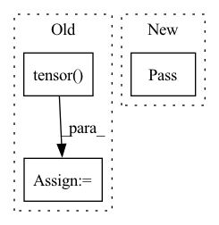

Pattern ID :27398

Before Change
Path(output_path).parent.mkdir(parents=True, exist_ok=True)
wav, sr = librosa.load(wav_file, sr=out_sample_rate)
noisy_wav = wavaug.add_noise(torch.tensor(wav))
torchaudio.save(output_path, noisy_wav, sample_rate=out_sample_rate)
// copy text files
After Change
print(f"[INFO] Start multiprocessing with {N_processes} processes")
with Pool(processes=N_processes) as pool:
for _ in tqdm(pool.imap(file_to_noisy_file, wav_files), total=len(wav_files)):
pass
// copy text files
txt_in_dir = data_dir / "txt"
txt_out_dir = save_dir / "txt"
In pattern: SUPERPATTERN
Frequency: 4
Non-data size: 3
Instances
Fragment ID: 81482761
Project Name: ga642381/robustvc
Commit Name: b126baaf7f3ce43577adb438842d1c6c4904b722
Time: 2021-08-28
Author: ga642381@gmail.com
File Name: assets/script/dataset_noise.py
M Class Name: AnonimousClass
N Class Name: AnonimousClass
M Method Name: main(3)
N Method Name: main(3)
M Parent Class:
N Parent Class:
M File Name: assets/script/dataset_noise.py
N File Name: assets/script/dataset_noise.py
M Start Line: 22
M End Line: 46
N Start Line: 37
N End Line: 64
'>
Before Change
for label in labels_dict.keys():
graph[label] = labels_dict[label]
for truth_key in ["energy", "position_x", "position_y", "position_z", "azimuth", "zenith"]:
graph[truth_key] = torch.tensor(truth_dict[truth_key], dtype = torch.float64)
return graph
def establish_connection(self):
After Change
graph[key] = torch.tensor(value)
except TypeError:
// Cannot convert `value` to Tensor due to its data type, e.g. `str`.
pass
return graph
'>
Fragment ID: 81482754
Project Name: icecube/graphnet
Commit Name: 6a7133daf2e2be3a3f066775da9414cae7dc2149
Time: 2021-10-25
Author: andreas.sogaard@gmail.com
File Name: src/gnn_reco/data/sqlite_dataset.py
M Class Name: SQLiteDataset
N Class Name: SQLiteDataset
M Method Name: _create_graph(3)
N Method Name: _create_graph(3)
M Parent Class: torch.utils.data.Dataset
N Parent Class: torch.utils.data.Dataset
M File Name: src/gnn_reco/data/sqlite_dataset.py
N File Name: src/gnn_reco/data/sqlite_dataset.py
M Start Line: 100
M End Line: 133
N Start Line: 101
N End Line: 145
'>
Before Change
// add noise
wavaug = WavAug(sample_rate=out_sample_rate, mode="test")
for wav_file in tqdm(wav_files):
output_path = wav_file.replace(str(data_dir), str(save_dir))
Path(output_path).parent.mkdir(parents=True, exist_ok=True)
wav, sr = librosa.load(wav_file, sr=out_sample_rate)
noisy_wav = wavaug.add_noise(torch.tensor(wav))
torchaudio.save(output_path, noisy_wav, sample_rate=out_sample_rate)
// copy text files
After Change
print(f"[INFO] Start multiprocessing with {N_processes} processes")
with Pool(processes=N_processes) as pool:
for _ in tqdm(pool.imap(file_to_noisy_file, wav_files), total=len(wav_files)):
pass
// copy text files
txt_in_dir = data_dir / "txt"
txt_out_dir = save_dir / "txt"
'>
Fragment ID: 81482758
Project Name: ga642381/robust-vc
Commit Name: b126baaf7f3ce43577adb438842d1c6c4904b722
Time: 2021-08-28
Author: ga642381@gmail.com
File Name: assets/script/dataset_noise.py
M Class Name: AnonimousClass
N Class Name: AnonimousClass
M Method Name: main(3)
N Method Name: main(3)
M Parent Class:
N Parent Class:
M File Name: assets/script/dataset_noise.py
N File Name: assets/script/dataset_noise.py
M Start Line: 22
M End Line: 46
N Start Line: 37
N End Line: 64